This is the table of contents for the TrustLens FYP documentation package. Start with
00-Handover.md if you haven't already — it's the one file meant to be read in full before anything
else.
| Document | Answers the question |
|---|---|
| 00-Handover.md | What's in this package, and what do I still need to do before submitting? |
| 01-Simple-Guide.md | What is TrustLens, in plain language, and what will the viva panel ask? |
| 02-Index.md | This document — where do I find X? |
| 03-SRS.md | What must the system do? (IEEE 830) |
| 04-SDD.md | How is the system built? (IEEE 1016) |
| 05-Test-Cases.md | What was actually tested, and what's the real defect log? (IEEE 829) |
| 06-User-Manual.md | How does an end user actually use the finished product? |
| 07-Thesis.md | The full submission manuscript — front matter, 8 chapters, references, appendices |
| Artefact | What it's for | Is this the submission copy? |
|---|---|---|
pdf/*.pdf |
Page-numbered PDFs of every document above, generated from the HTML build | Convenience copies for reading/printing/email — not the thesis submission copy |
*.html (via build_html.py) |
Browser-viewable editions with diagrams inlined as SVG | For reading only |
screenshots/*.png |
The real captured screenshots referenced throughout | Source assets, embedded into the Markdown/HTML/PDF/DOCX |
diagrams/*.png |
Every Mermaid diagram, pre-rendered to print-quality PNG | Used inside the Word thesis, where live Mermaid can't render |
Project_Thesis.docx |
The bound Word document — A4, Times New Roman, 1.5 spacing, binding margin, roman-then-arabic pagination, auto-updating Table of Contents field | Yes — this is the actual submission copy, after you update its Table of Contents field in Word (press F9) |
If in doubt: the file with .docx in its name, after you've opened it in Word and updated the Table
of Contents, is what gets submitted. Everything else is a reading aid.
Real screenshots captured from the running local application, grouped by area — unretouched, including
the small red "N · 1 Issue" badge visible in a couple of them, which is Next.js's own development-mode
indicator and not part of the product's actual interface (it does not appear in a production build).
Full-size originals are in screenshots/; the same images are embedded with captions in 06-User-Manual.md and
07-Thesis.md §7.1.
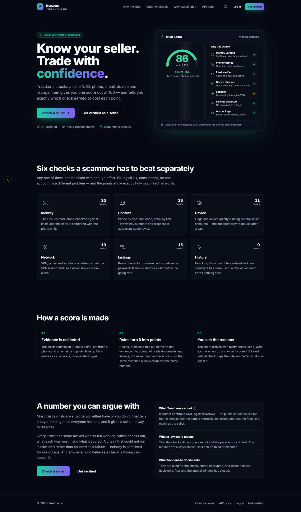
The landing page — a worked example of a Trust Score breakdown is shown before a visitor even registers, stating the product's core claim directly.
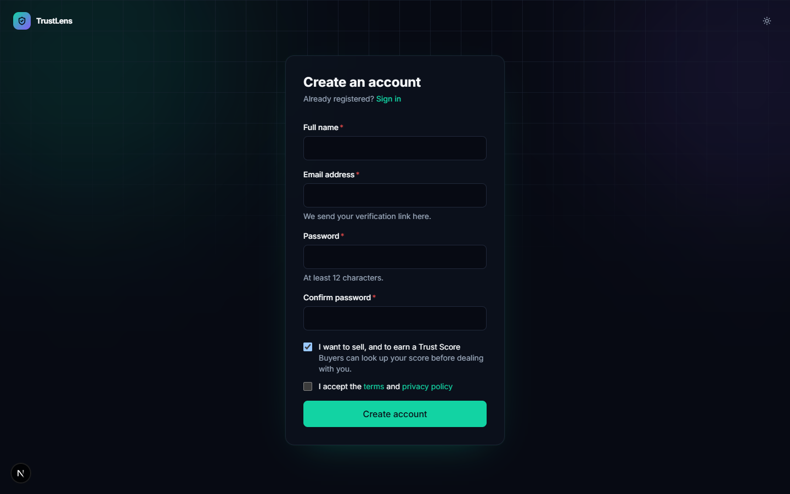
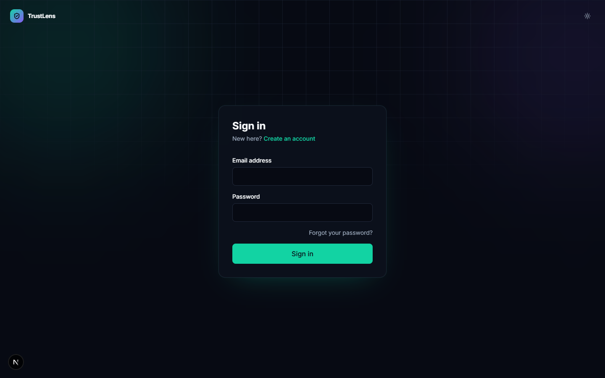
Registration and sign-in — minimal fields, the password policy stated inline, and an explicit seller/buyer choice at signup.
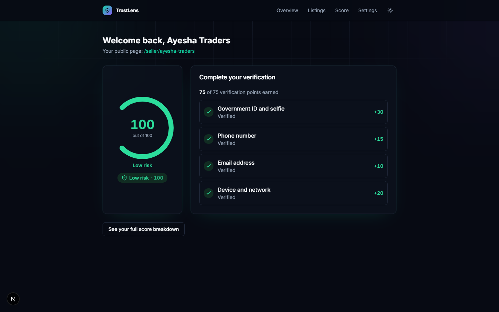
A signed-in seller's overview — the entry point to verification, listings, and the Trust Score.
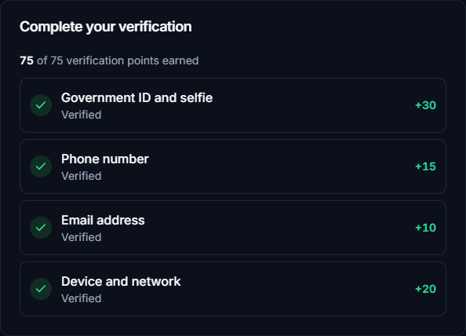
The four-check verification checklist (identity, phone, email, device), each showing the points it's worth.
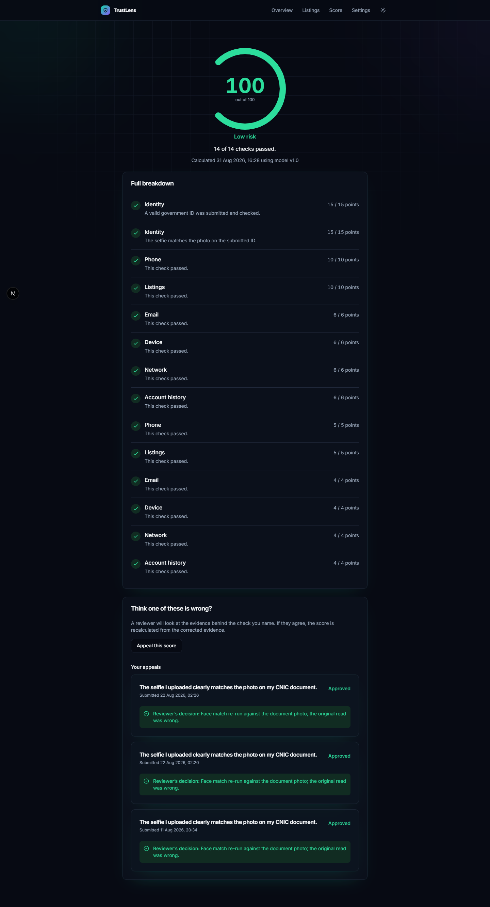
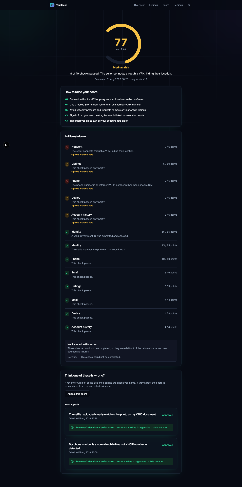
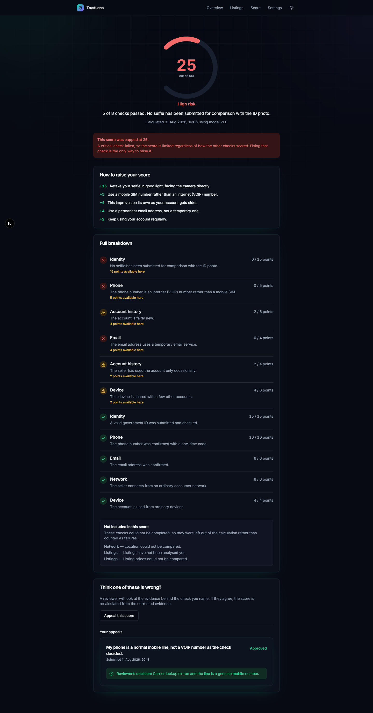
The same page rendering three genuinely different sellers from the demo seed data — a fully-verified seller (LOW), a partially-verified one (MEDIUM), and one with a failed critical check and a visibly capped score (HIGH). Note the appeals section at the bottom of this same page in the high-risk capture — appeals are not a separate screen in the current build.
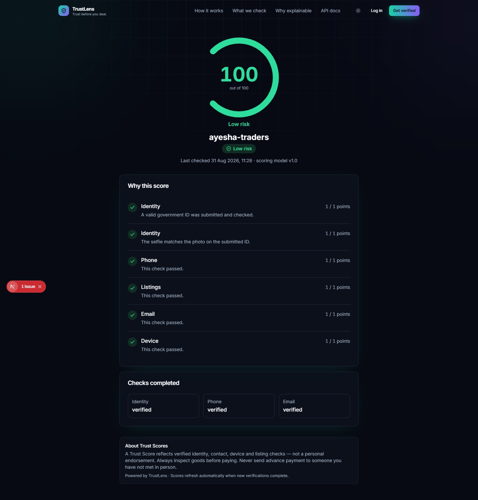
The anonymous, no-account-required public score page — the screen a buyer actually sees, and the one the entire product exists to produce.
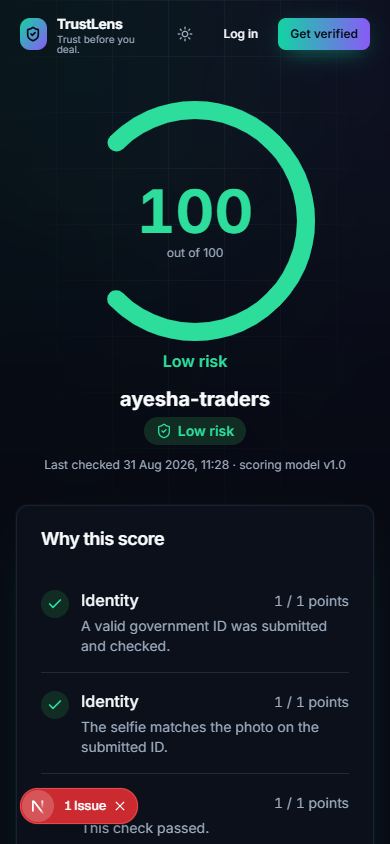
The same page at a 390px mobile viewport width — this is the screen shown in the live demo, and it must remain legible at this size.
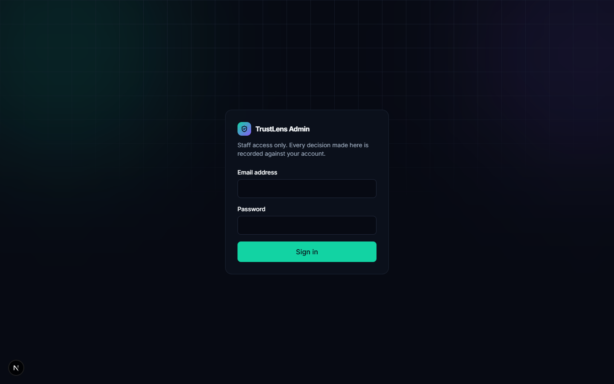
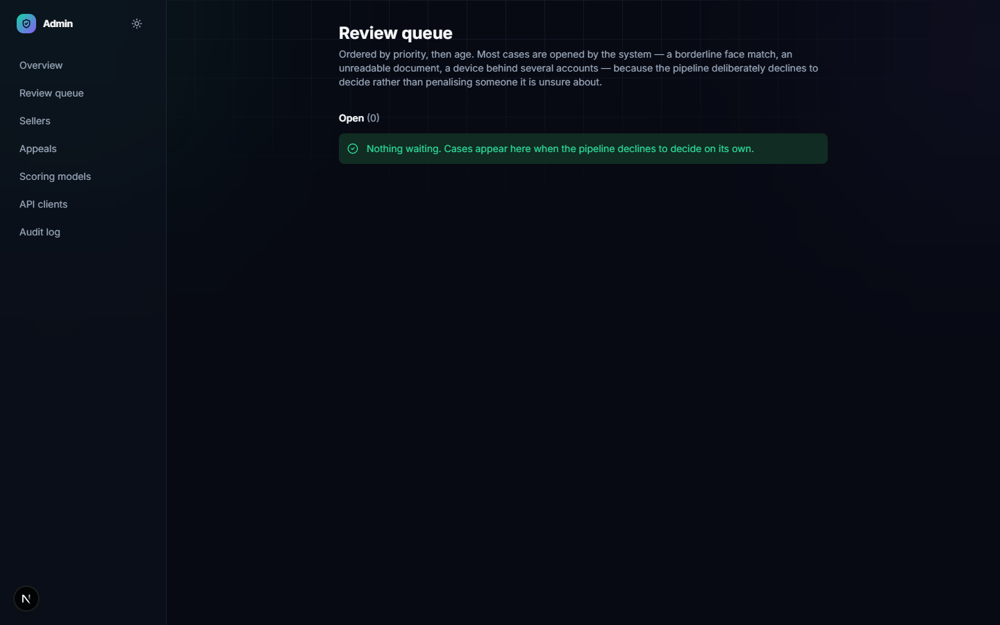
Staff sign-in and the identity/appeal review queue — the part of the admin panel that is complete
and working end-to-end. See 05-Test-Cases.md §6 (DEF-09) for what's still unbuilt in the rest of
the admin panel.
If any image above renders as a broken link: these are real captures taken from a running local
instance during this documentation pass, not generated mockups. If one is missing, check
06-User-Manual.md's own notes for that screen — a small number of screens may be noted there as
not independently captured (e.g. because a route turned out not to exist separately from another
page already shown).
| If you are... | Read in this order |
|---|---|
| An evaluator / supervisor | 00-Handover.md → 01-Simple-Guide.md → 07-Thesis.md → dip into 03/04/05 for detail as questions come up |
| An incoming developer taking over the codebase | 01-Simple-Guide.md → 04-SDD.md → 03-SRS.md → the engineering docs in docs/ (architecture, folder structure, dev setup) in the repo root, which this package summarises but does not replace |
| An end user of the finished product | 06-User-Manual.md only |
Every diagram in this package is written as Mermaid code (```mermaid fences) directly inside the
Markdown source. They will not render as pictures in a plain-text editor or an unconfigured
preview:
.md file.pdf/ and the .html set) has every diagram pre-rendered to inline SVG — this
is the reliable fallback if your viewer doesn't support Mermaid.diagrams/, since Word cannot render Mermaid at
all.Every diagram in this package was render-tested against real mermaid.js before being shipped —
see the QA note at the bottom of 00-Handover.md's revision history if you need to re-validate after
an edit.
python build_html.py --docs-dir fyp-submission/docs --project-name "TrustLens"
python render_diagrams_png.py --docs-dir fyp-submission/docs
node build_thesis_docx.js --src fyp-submission/docs/07-Thesis.md --out fyp-submission/docs/Project_Thesis.docx
python build_pdf.py --docs-dir fyp-submission/docs --footer "TrustLens FYP -- Minhaj University Lahore"
python make_package.py --docs-dir fyp-submission/docs --project-slug TrustLens
Run in this exact order — each step depends on the one before it. Full script options: pass --help
to any of them.
| Document | Status |
|---|---|
| 00 – Handover | Complete |
| 01 – Simple Guide | Complete |
| 02 – Index | Complete |
| 03 – SRS | Complete |
| 04 – SDD | Complete |
| 05 – Test Cases | Complete — 26 of 51 specified test cases executed (~51%), honestly marked; see its banner |
| 06 – User Manual | Complete |
| 07 – Thesis | Complete — front matter, 8 chapters, references, 4 appendices |
| Screenshots | Captured from a real running local instance |
| Diagrams | All render-tested against mermaid.js before shipping |
Word thesis (.docx) |
Generated — update its Table of Contents field in Word before submitting |
Open items before final submission (from REMAINING.md in the project root, Track D): collecting
real CNIC/face test images for accuracy validation, completing the admin panel, implementing MFA, and
rehearsing the viva. None of these block this documentation package from being complete and honest as
of today — they are the project's own next steps, not gaps in what's described here.